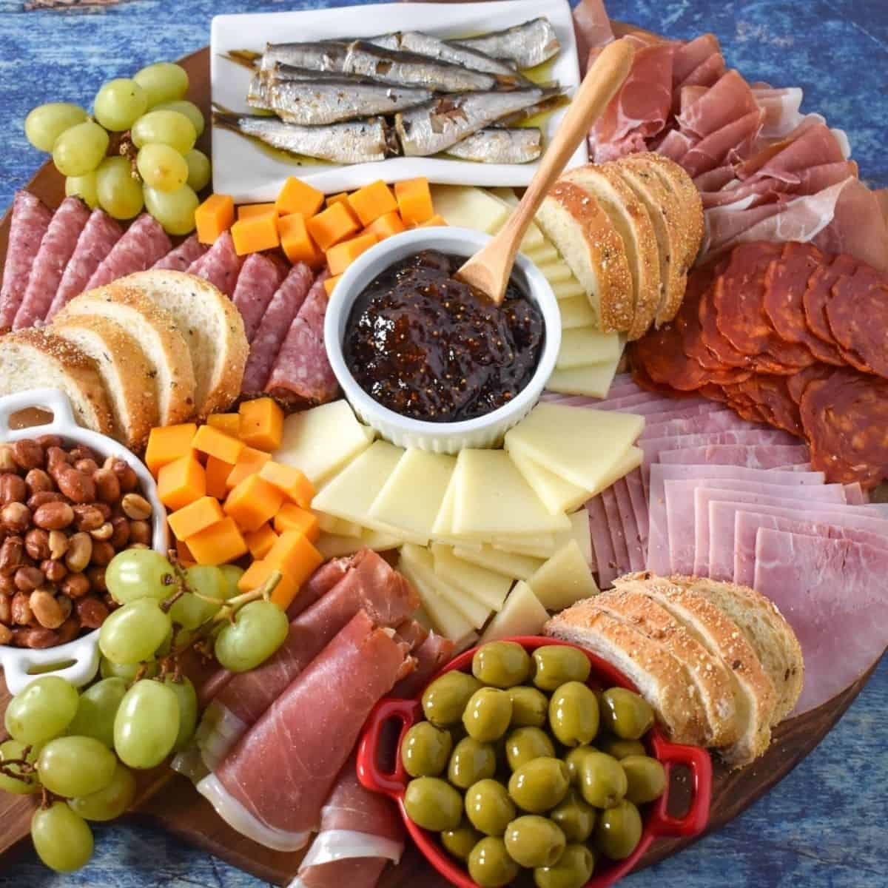

Tapas Platter

Description
Tapas are an integral part of Spanish culture, and this platter is a beautiful way to enjoy a low Carb meal with friends. Garlic mushrooms, garlic shrimp, and fried Spanish pimientos de Padrón take centre stage. Olives, Serrano ham, spicy chorizo, and manchego cheese complete the selection. There's something for everyone! Arrange all the ingredients on your biggest chopping board and gather your favourite people!
Ingredients
Pimientos de Padrón
- 1 tbsp olive oil
- 230 (g) pimientos de padrón
- ½ tsp flaky salt
- 1 tsp lemon juice
Garlic Mushrooms
- 230 (g) (800 ml) mushrooms
- 3 garlic cloves, minced
- 1 tbsp olive oil
- ½ tsp chili flakes
- ¼ tsp smoked paprika powder
- 60 ml dry sherry or white wine
- ½ tsp flaky sea salt
- 1 tsp lemon juice
- 1 tbsp fresh parsley, chopped
Garlic Shrimp
- 1 tbsp olive oil
- 4 garlic cloves, minced
- ½ tsp chili flakes
- 350 (g) raw shrimp, shelled and deveined
- ½ tsp flaky sea salt
- 1 tsp lemon juice
- 1 tbsp fresh parsley, chopped
For the Platter
- 170 (g) Manchego cheese
- 170 (g) air-dried chorizo
- 110 (g) Serrano ham
- 110 (g) green olives
Instructions
Pimientos de Padrón
- Rinse and dry the pimientos. Heat the olive oil over medium-high heat in a large skillet. When it starts to shimmer, add the pimientos.
- Fry the pimientos for 7-8 minutes, tossing them halfway. When they turn blistery with charred spots and they start to deflate, they're ready.
- Transfer the pimientos to a serving bowl. Sprinkle with flaky sea salt and lemon juice.
Garlic Mushrooms
- Wipe the mushrooms with a paper towel to remove any dirt. Quarter them and finely mince the garlic.
- Heat the olive oil over medium heat in a large skillet. Add the minced garlic and cook for a minute, until fragrant. Add the mushrooms and cook for 5 minutes, stirring from time to time, until they start to release a bit of moisture.
- Add the chilli flakes, smoked paprika, and sherry to the pan, stir to combine — cook for 2-3 more minutes.
- Transfer the mushrooms to a serving bowl and sprinkle with flaky sea salt, lemon juice, and chopped parsley.
Garlic Shrimp
- In a non-stick frying pan, heat the olive oil over medium heat. Add the minced garlic and chilli, stir until fragrant, for about one minute.
- Turn up the heat to medium-high, add the shrimp. Cook for 2-3 minutes while stirring, until the shrimp are pink and cooked through.
- Remove the pan from the heat and transfer the shrimp to a serving bowl. Sprinkle with flaky sea salt, lemon juice, and chopped parsley.
For the Platter
- On a large wooden board, arrange the bowls of garlic mushrooms, pimientos de Padrón, and garlic shrimp around the board.
- Arrange the Manchego cheese, chorizo, Serrano ham, and green olives around the bowls.
- Serve with toothpicks or small forks.
Nutrients
| Carbs |
Protein |
Fat |
Calories |
Fibre |
Sugar |
Sodium |
Calcium |
Sat |
GL |
| (g) |
(g) |
(g) |
(kCal) |
(g) |
(g) |
(mg) |
(mg) |
Fat (g) |
(g) |
| 2.75 |
11.04 |
11.53 |
164.32 |
0.86 |
1.77 |
809.4 |
126.04 |
4.6 |
0.78 |
Back to top of page